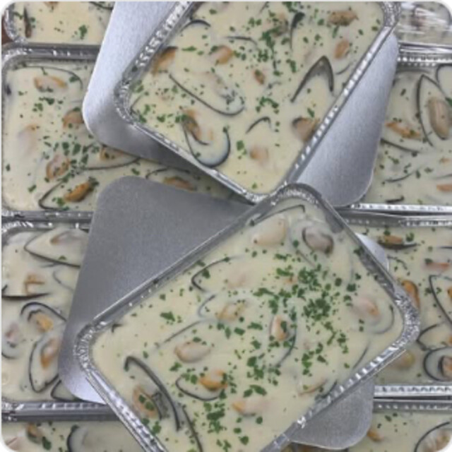
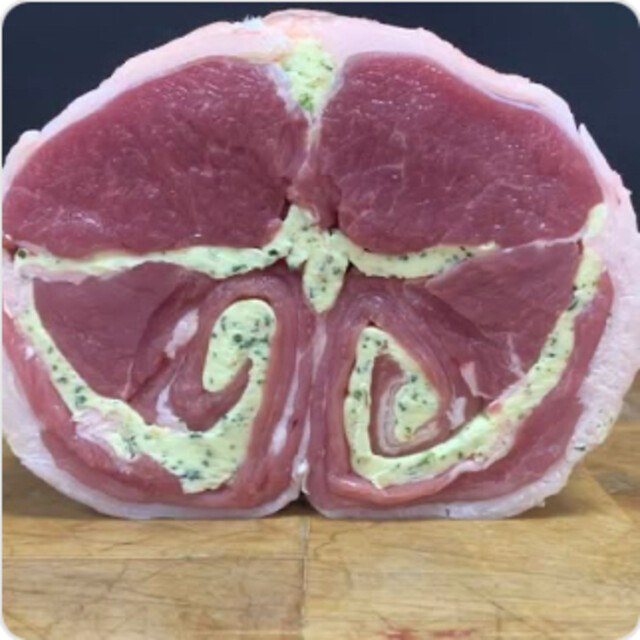

Du plat du jour à la table de Noël
Plats cuisinés, rôtisserie, accompagnements, et une carte des fêtes pour les grandes occasions.

À emporter, tous les jours
Pas le temps de cuisiner ? Le traiteur de la maison prépare des plats cuisinés, des accompagnements et des volailles à la rôtisserie.
- La rôtisserie : poulets et volailles, cuits sur place.
- Les plats cuisinés, à la part ou à la barquette.
- Les accompagnements : gratins, purées, risotto.
- Les entrées et les terrines pour commencer le repas.
Les plats changent selon les jours et les saisons. Demandez ce qu'il y a au comptoir.
La carte des fêtes
À l'occasion des fêtes de fin d'année, Eric Loubet et son équipe proposent un large choix de viandes et de charcuteries. Pour vous satisfaire au mieux, passez commande quelques jours avant, au magasin ou par téléphone au 04 71 59 40 28.
Les tarifs ci-dessous viennent de la carte de Noël 2024. Ils servent d'exemple et seront remplacés par ceux de l'année en cours.

Entrées froides
- Foie gras de canard120 €/kg
- Médaillon de saumon30,90 €/kg
- Saumon fuméCraponne-sur-Arzon74,90 €/kg
- Terrines au choixSanglier, volailles, veau et porcen boutique
Entrées chaudes
- Bouchée aux ris de veau5,90 €/pièce
- Boudin blanc nature16,90 €/kg
- Boudin blanc aux morilles21,90 €/kg
- Boudin blanc truffé28,90 €/kg
- Cassolette aux ris de veau et aux morilles7,90 €/pièce
- Coquille Saint-Jacques6,50 €/pièce
- Feuilleté aux morilles4,50 €/pièce
Volailles de fête
- Cailleen boutique
- Chapon fermierLabel Rouge17,90 €/kg
- Suprême de chapon25,90 €/kg
- Pintade chaponnée21,90 €/kg
- Cuisse de chapon19,90 €/kg
- Dinde fermièreLabel Rouge18,90 €/kg
- Poularde fermière17,90 €/kg
Les farcis
- Rôti de chapon, farce forestièreCèpes et trompettes des morts29,90 €/kg
- Rôti de pintade, farce aux marrons24,90 €/kg
- Rôti de veau farciselon recette
Spécialités bouchères
- Fondue bourguignonneen boutique
- Gigoten boutique
Plats cuisinés
- Carbonade de sanglier à la bière8,90 €/part
- Filet de poularde sauce morilles9,90 €/part
- Filet de veau sauce forestière10,90 €/part
Le poisson
- Corolle de limandeBeurre d'ail des ours9,90 €/part
Les accompagnements
- Gratin de courge aux châtaignes16,90 €/kg
- Gratin dauphinois aux cèpes3,90 €/part
- Pomme dauphine18,90 €/kg
- Purée à la truffe noire19,90 €/kg
- Risotto aux cèpes3,50 €/part
Préparer ma commande
Choisissez vos quantités, le récapitulatif se met à jour. Copiez-le, puis envoyez-le ou donnez-le au comptoir. Les prix au kilo sont estimés, le montant final dépend du poids exact.